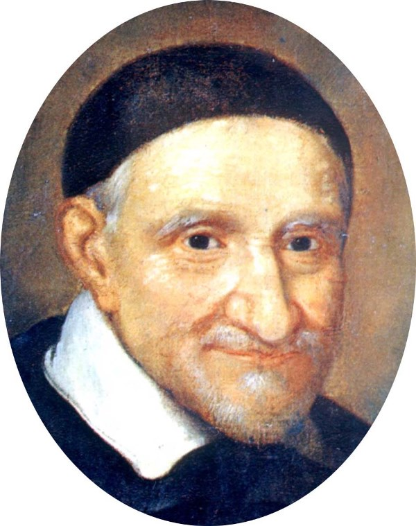
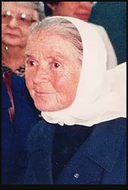
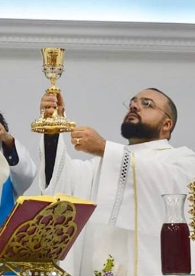

Lugares
Instituição Amparo Maternal
Na década de 1930, um período no qual a gravidez indesejada ou não planejada era mal vista pela sociedade, era comum a exclusão de mães solteiras, de mulheres pobres, mestiças e negras, e o abandono de gestantes dentro desses perfis por suas famílias.
E foi da concepção de que nenhuma parturiente na cidade de São Paulo deveria ficar sem um local adequado para dar à luz que o médico obstetra Álvaro Guimarães Filho, a Madre franciscana Marie Domineuc e o arcebispo de São Paulo da época, Dom José Gaspar D’Affonseca e Silva, fundaram o Amparo Maternal, em 1939.
Com um serviço de atendimento a gestantes em situação de risco e vulnerabilidade social e o lema de “Nunca Recusar Ninguém”, a entidade chegou a ser pejorativamente chamada de Casa da Mãe Solteira, por conta do preconceito que a sociedade tinha com acolhimento de grávidas não casadas, rotuladas de prostitutas.
Em consequência das intolerâncias de uma população de conceitos tradicionais e duros, veículos de comunicação traduziram negativamente o trabalho social iniciado pela instituição, exigindo o fim de seu funcionamento. Entretanto, superadas as primeiras dificuldades, a organização conseguiu, em 1945, votos da Câmara Municipal para a construção das instalações do Amparo Maternal.
Projeto do prefeito Dr. Prestes Maia, a reforma do prédio na diagonal foi pensada em benefício das mulheres que seriam atendidas, construída com face voltada para o nascer do sol, com uma extensa varanda frontal, onde as mães pudessem caminhar com seus recém-nascidos e receber vitaminas provenientes dos raios solares.
Ao longo das décadas de 1950 e 1960, outras barreiras foram enfrentadas pelos administradores da organização como a falta de recursos, atrasos nas obras, ainda o intenso preconceito da população e um custoso incêndio, já em uma fase bem adiantada da construção.
Todavia, em 1964, o governador Dr. Adhemar de Barros usou de sua influência e, finalmente, inaugurou o prédio que, até os dias atuais, é a sede da entidade. A maternidade, desta forma, passou a se desenvolver, realizando, em 1974, cerca de 60 nascimentos por dia.
Na década de 1980, outras conquistas foram alcançadas, como o Centro Cirúrgico, a Área Social, o Departamento de Farmacologia, com o intuito de produzir produtos de limpeza, lavanderia, farmácia e medicamentos, e uma Padaria, para consumo da própria ONG. Já na década de 1990, durante a parceria com a Escola Paulista de Medicina, que durou aproximadamente 10 anos, o Amparo Maternal se solidifica ainda mais como modelo na Saúde ao criar a Unidade Ginecológica, Ambulatório, Cozinha, Unidades de Enfermagem, Escritórios e Recepção, além de receber de doação uma ambulância e três leitos de Unidade de Terapia Intensiva (UTI) infantil.
Ao ganhar mais notoriedade de órgãos públicos, nos anos 2000, passa a realizar o teste instantâneo de HIV (Human Immunodeficiency Virus, termo em inglês do Vírus da Imunodeficiência Humana, causador da Acquired Immune Deficiency Syndrome (AIDS), a Síndrome da Imunodeficiência Adquirida, em português) em todas as parturientes atendidas, leva uma filial do 21º Cartório de Saúde para dentro da Casa, para facilitar o registro de bebês nascidos dentro da instituição, cria uma sala para vacinação e propaga, então, a importância do aleitamento materno nos primeiros 180 dias de vida.
A fim de ajudar na gestão administrativa do Amparo Maternal, a Associação Congregação de Santa Catarina (ACSC), sem fins lucrativos e atuante nas áreas de Saúde, Ensino e Assistência Social, firma uma parceria com a organização em 2008. No ano seguinte, o então prefeito Gilberto Kassab doa definitivamente o terreno no qual Amparo Maternal se situa à própria instituição, até a ocasião cedido em comodato.
Não se esquecendo de sua preocupação com gestantes que não possuem condições de dar à luz com dignidade por não terem moradia, o Alojamento Social do Amparo Maternal, hoje chamado de Centro de Acolhida, cuida de conviventes e seus bebês, que recebem atendimento médico, psicológico e de assistência social durante todo o período de estada na Casa, que pode ser de até 01 ano e 03 meses, ou seja, desde o primeiro mês de gestação da mulher até 06 meses após o parto.
Atuando, então, nas áreas da Saúde e Assistência Social, o Amparo Maternal tem um compromisso com projetos materno-infantis. Em sua maternidade, os serviços ambulatorial, de obstetrícia, de diagnóstico e neonatologia são totalmente oferecidos às mulheres por meio do convênio com o Sistema Único de Saúde (SUS). Mensalmente, são realizados uma média de 500 partos, sendo cerca de 70% deles normais.
Centro de formação profissional, a organização recebe anualmente estudantes das mais renomadas universidades do país para estágios e residências em Obstetrícia, Neonatologia e Enfermagem, principalmente pelo conceito de valorização do ser humano que sempre foi tratado dentro da entidade.
Mesmo com os repasses do Governo, o Amparo Maternal possui um déficit de cerca de R$2 milhões mensais, cobertos pela Associação Congregação de Santa Catarina e por investimentos de empresas parceiras. E, embora a sua missão de continuar existindo seja árdua, oferece-se o melhor à comunidade.
À procura de humanização desde o momento de sua fundação, o Amparo Maternal preocupa-se em dar atenção especial à sua equipe de profissionais, por meio de orientações e oportunidades de crescimento interno, e prioriza o cuidado com suas pacientes e, também, com o de suas famílias, por entender que elas também fazem parte de uma etapa marcante: a do nascimento de uma vida, que mudará suas rotinas e destinos.
Portanto, é o respeito pelas pacientes que conduz as ações do Amparo Maternal e faz com que a instituição sempre busque desenvolver seus profissionais, implantar novas tecnologias, adequar ambientes e aumentar, a cada dia, a qualidade dos serviços oferecidos. É humanizar para melhor atender. É criar vínculos com pessoas e empresas que acreditem no trabalho da organização e possam, também, ajudar na construção de novas histórias de sucesso.
Jardim Sabiá
Bairro da região sul da capital de São Paulo, localizado na Av. Paulo Guilguer Reimberg entre os bairros Sete de Setembro e Jardim Varginha. O bairro Jardim Sabiá tem ao seu lado o bairro Jardim Sabiá II, entre estes havia uma pequena praça onde foi fundada, na década de 60, o que é hoje a comunidade São Vicente de Paulo. Na imagem, o ícone de cor rosa com um coração branco por dentro mostra a rua atual da Comunidade.
Figuras Importantes
São Vicente de Paulo

São Vicente de Paulo nasceu em 24 de abril do ano 1581, em Pouy, no sul da França e foi batizado no mesmo dia. Faleceu no dia 27 de setembro de 1660, em Paris. Neste século XVII, São Vicente participou ativamente na Reforma Católica ocorrida na França.
Vicente foi o terceiro filho de Jean de Paul e Bertrande de Moras. Seus pais eram camponeses de fé firme e vigorosa. A própria mãe deu educação religiosa aos seis filhos.
São Vicente de Paulo, o Padre Vicente
Vicente se destacava pela sua inteligência e pelo zelo religioso.
Começou a estudar na cidade de Dax, onde mais tarde, foi professor. Estudou teologia na Universidade de Toulouse. Sua ordenação sacerdotal, com apenas dezenove anos, foi no dia 23 de setembro de 1600. Nessa época ele passou por uma forte provação: uma senhora viúva que gostava de ouvi-lo pregar, sabendo que ele era uma pessoa pobre, deixou sua herança para ele, uma propriedade e uma quantia em dinheiro, que estava em posse de um comerciante na cidade de Marselha. O Padre Vicente vai até lá para receber esta herança com a intenção de distribuí-la para os pobres.
Grande reviravolta na vida de São Vicente de Paulo
Ao retornar de Marselha, o navio em que ele viajava sofreu um ataque de piratas turcos. Pe. Vicente tornou-se prisioneiro e foi vendido em Túnis como escravo. Depois, foi vendido a outro homem que, ao morrer, o deixou como escravo herança a um sobrinho fazendeiro. Este tinha sido católico, mas, por medo da perseguição, tornara-se muçulmano.
O escravo volta à liberdade
Uma das três esposas deste fazendeiro ficou encantada com as músicas que Pe. Vicente cantava ao rezar e quis saber o significado daquilo. Ao ser evangelizada por Pe. Vicente, a mulher chamou a atenção do marido dizendo que ele não poderia ter abandonado aquela religião tão linda e séria. O patrão se arrependeu e se converteu. Meses depois, o homem foi com Padre Vicente até à França. Foram escondidos dos muçulmanos, em 1607. Chegando a Avignon encontraram o Vice-Legado do Papa e Vicente recebeu de volta suas credenciais de sacerdote. Seu ex-dono retornou à Igreja Católica, foi admitido num mosteiro e se tornou monge.
São Vicente de Paulo, um homem dos pobres
Em Roma, Pe. Vicente frequentou a universidade e se formou em Direito Canônico. Foi nomeado Capelão da Rainha Margarida de Valois, a rainha Margot, pelo rei Henrique IV. Ele fazia a distribuição das esmolas dadas aos pobres e visitava os doentes no hospital.
Padre Vicente cumpria sua missão de sacerdote com tanto amor e zelo, que todos já o tinham como santo.
Para o Padre Vicente, cada doente e cada pessoa, por mais miserável, era a própria pessoa de Jesus Cristo e tinha que ser tratada como tal. O Cardeal Pierre de Bérulle, Bispo de Paris, nomeou Vicente de Paulo como vigário de Clichy, um bairro da cidade.
Legado para a humanidade de São Vicente de Paulo
São Vicente fundou a Confraria do Rosário, que se dedicava a visitar e cuidar dos doentes. Por isso, ele se tornou Capelão Geral e Real da França. Depois, ele fundou a Congregação da Missão, dos Padres Lazaristas, que trabalhava para evangelizar os camponeses.
Num apelo feito pelo Pe. Vicente em Châtillon nasceu a Confraria da Caridade, conhecido também como o movimento das Senhoras da Caridade. A primeira religiosa foi uma camponesa, Ir. Margarida Nasseau, que teve orientação de Santa Luísa de Marillac. Depois, oficializou a Confraria das Irmãs da Caridade, atualmente conhecidas como Filhas da Caridade.
Organizador da caridade
Inspirado por seu amor a Deus e aos pobres, Vicente de Paulo organizou muitas obras de caridade, doando-se inteiramente aos irmãos mais necessitados. Ele é considerado o pai dos pobres e também causou muitas mudanças no clero. As Conferências Vicentinas que conhecemos na atualidade tiveram início com Antônio Frederico Ozanam e seus companheiros, no ano de 1833. Essas conferências foram inspiradas por São Vicente de Paulo, e hoje estão espalhadas pelo mundo inteiro. São Vicente estipulou regras e condutas para as visitas aos pobres e doentes, visando à discrição, ao respeito para com os necessitados sem humilhá-los em hipótese alguma, mas, sim, ao contrário, fazendo-se igual a eles.
Devoção a São Vicente de Paulo
Para São Francisco de Sales, Vicente de Paulo era o sacerdote mais santo da época. Ele faleceu e foi sepultado na capela da Igreja de São Lázaro, na cidade de Paris. Sua canonização aconteceu em junho de 1737. Em maio de 1885 o Papa Leão XIII o declarou patrono das obras de caridade da Igreja Católica Apostólica Romana.
Corpo incorrupto
52 anos após a sua morte, seu corpo foi exumado e encontrado incorrupto. Foram testemunhas do fenômeno, dois médicos, autoridades da Igreja e algumas pessoas. Para os dois médicos é impossível este tipo de preservação do corpo ocorrer naturalmente. Seu corpo está exposto na Capela de São Vicente de Paulo, em Paris, aberto à visitação. Seu coração está conservado em um relicário na Capela de Nossa Senhora da Medalha Milagrosa.
Madre Marie Domineuc

O ano era 1938. O mundo estava em guerra, Getúlio Vargas no poder, e o estado de São Paulo enfrentava o declínio de sua principal atividade econômica: a cafeicultura. A capital, com cerca de 1 milhão de habitantes, crescia, industrializava-se e, sem a mínima infraestrutura, recebia gente de todo o Brasil, que fugia da miséria, em busca de uma vida melhor. Foi esse cenário que madre Marie Domineuc, uma francesa de apenas 23 anos, encontrou ao chegar ao Brasil. Por ordem da Congregação Irmãs Franciscanas Missionárias de Maria, em Roma, fora enviada para ajudar a fundar a primeira escola de enfermagem do Hospital São Paulo — a pedido do obstetra e professor Álvaro Guimarães Filho ao Arcebispo Dom José Gaspar D’Affonseca.
A jovem madre, além de professora de enfermagem, assumiu a assistência social do hospital. E "com o verdadeiro espírito franciscano",
atendia aos necessitados que buscavam auxílio, com o lema de "não viver senão para servir".
Mas uma coisa afligiu madre Marie Domineuc: o número de mulheres que chegavam para dar à luz sozinhas, ou que saíam do hospital sem ter para onde ir. Eram descendentes de escravos, vindas de todo o Brasil; gente do interior do estado; operárias; empregadas domésticas — que, ao engravidar, eram despedidas sem nenhuma lei que as amparasse, dentro de uma sociedade rígida e intolerante. "Mulheres que saíam de suas cidades, sozinhas, sem família. Muitas não tinham carteira de trabalho, nem documentos, e o hospital não as aceitava por isso", conta a presidente do Amparo Maternal, irmã Enir Loubet, da Congregação Irmãs de São Vicente de Paula Gysegem.
"Madre Domineuc nunca recusava ninguém: essa foi sua filosofia assistencial, seguida até hoje."
Eram tantas mulheres que necessitavam de assistência integral, que a madre pediu a Dom Gaspar um lugar para abriga las. Foi quando fundaram, em 1939, o Amparo Maternal: "Para ser um lar que as acolhesse nessas condições. Várias casas foram alugadas na Vila Mariana, onde as mulheres moravam, dividiam o serviço e a educação dos filhos". Mas madre Marie Domineuc necessitava que em cada casa fosse possível realizar partos. E foi buscar recursos, sempre com apoio de Dom José Gaspar e do professor Álvaro Guimarães Filho. "E as casas tornaram-se maternidade!", ressalta Irmã Enir.
A vizinhança não via com bons olhos a proximidade dos albergues e, por vezes, até a Madre sofria preconceito, sendo xingada pelos moradores no meio da rua:
"Ela tratava as mulheres do Amparo como suas filhas. Era uma pessoa enérgica, desprendida e profundamente religiosa. Não se importava em ser mal vista pelos vizinhos por ter abraçado a obra",
descreve, Irmã Enir
Estava à frente de seu tempo e não descansou até que, 15 anos depois, conseguiu unificar as casas-maternidade espalhadas pelo bairro em uma só edificação. Finalmente, em 1945, a Câmara Municipal votou o início das instalações do Amparo Maternal. "O prefeito era Prestes Maia, foi ele próprio que fez o projeto da construção, com um imenso terraço com a face voltada ao pôr do sol", informa o assistente eclesiástico padre Celso Paulo Torres.
Foram 11 longos e sofridos anos até que a obra ficasse pronta. A incansável madre Marie Domineuc — que se mudou com as albergadas para o local durante a construção — enfrentou a falta de recursos, o atraso das obras e, ainda, os preconceitos. Até que, em 1954, o prédio foi inaugurado pelo então governador Adhemar de Barros, embora só tenha ficado totalmente pronto em 1964.
"Ela dava muita atenção para todas que chegavam ao Amparo Maternal. Quanto mais pobre, maior a atenção na hora do parto. Quantas vezes cedeu sua cama por falta de leito",
lembra Irmã Enir.
O amor pela instituição era tamanho que, ao ser chamada de volta para sua congregação, sendo obrigada a escolher entre os dois, resolveu continuar no Amparo Maternal. Tirou então o hábito, substituindo-o por uma fralda, que lhe serviu de lenço até 1974, quando retornou à congregação: "Ela se sentia muito cansada, e o Arcebispo Dom Paulo Evaristo Arns pediu à minha congregação que assumisse a instituição, administrando-a por 33 anos", conta Irmã Enir.
Para ela, o grande mérito do Amparo Maternal é ter chegado aos 70 anos, batendo de porta em porta para continuar seu trabalho. "A filosofia de nunca recusar ninguém sempre foi muito forte para chegarmos até aqui, embora, hoje em dia, não dê para depender de recursos desta maneira. Trabalhamos sempre sob muita pressão", confessa.
Desde 2008, a falta de recursos foi atenuada graças à parceria com a Associação Congregação Santa Catarina em sua gestão: "O SUS repassa metade do custo dos partos" — 80% deles normais, reflexo do programa Parto Humanizado —, "o resto vem de doações". O albergue, segundo Irmã Enir, não recebe nada do governo. "E o Hospital Santa Catarina é o ‘Good Brother’ do Amparo Maternal!", brinca Padre Celso. Em 2009, o prefeito Gilberto Kassab passou, definitivamente, o terreno para a instituição: "O prefeito gosta muito daqui. Ele tem forte relação com a Vila Mariana", acrescenta. O restante do dinheiro vem por meio de doações. Chegam também fraldas, material higiênico e de limpeza: "Precisamos de tudo, mas com isso não dá para pagar nossas contas. Para se ter uma ideia, uma ampola do medicamento para os bebês que nascem com problemas cardíacos custa 800 reais", explica Irmã Enir.
Amanda Domingues, 19 anos, apresenta com orgulho seu pequeno Lucas, de apenas 1 mês. Seu caso é semelhante a muitos outros que chegam à instituição: ficou grávida do namorado, que não assumiu a paternidade. Foi expulsa de casa, em Diadema, e chegou ao Amparo Maternal com dois meses de gestação: "Fui encaminhada para o Amparo Maternal, abrigada e recebi até suporte psicológico. Me senti acolhida e bem tratada", revela. Ela recebeu todos os cuidados necessários para uma gestação sadia: pré-natal, exames laboratoriais, ultrassom, ganhou o enxoval do bebê — que, depois de nascido, fez o teste do pezinho e foi registrado no cartório localizado na instituição. "Durante esse tempo em que estou aqui, também participei de vários cursos: informática, artesanato, costura. Eles preparam a gente para, quando sair, estar preparada para conseguir trabalho. Daqui a dois meses, quando for embora, já vou encaminhada para algum emprego", diz, agradecida.
Muitas dessas mulheres chegam ao Amparo Maternal só com a roupa do corpo e são encaminhadas para as salinhas das voluntárias, onde recebem os primeiros-socorros: roupas íntimas, material de higiene e orientação: "A pobreza se modificou. Antigamente, elas vinham descalças ou, no máximo, com chinelos de dedo. Eram muito pobres, sofredoras... Hoje também há casos assim, mas a característica maior da pobreza é a questão da droga", lamenta Irmã Enir.
O trabalho das voluntárias é imprescindível na instituição, que, de janeiro a outubro deste ano, realizou 5.735 partos: são elas que fazem o enxoval do bebê, cuidam do bazar e dão auxílio às mães: "Para quem quiser ser voluntária, trabalho não falta aqui!", convida Irmã Enir. É o caso da médica Therezinha da Silva Richiere, que, há 4 anos, em todas as quintas-feiras, visita às parturientes: "Converso com elas, ensino a amamentar e procuro mostrar a bênção dessas mulheres em ganhar um filho. Nessa hora, despertar esse tipo de amor é muito importante", ensina a voluntária, com uma cesta na mão e ar de felicidade.
"Dilma Rousseff visitou o Amparo Maternal durante a campanha de 2.º turno e ficou encantada com nosso trabalho. Disse que a instituição será referência para outras cidades do Brasil em sua gestão", comemora a assistente social e responsável pela ouvidoria de serviço e atendimento ao usuário, Marlene Beatriz Novaes, que há 19 anos trabalha no local.
Madre Marie Domineuc faleceu em 1998. Com determinação, construiu a maior maternidade da América Latina. "As portas do Amparo Maternal continuam abertas, seguindo sua filosofia de nunca recusar ninguém", garante Irmã Enir, que teve a oportunidade de conhecer a pequenina e obstinada madre francesa, que deixou um legado de amor e esperança.
"Ela encontrava a gente nos corredores, olhava bem nos nossos olhos e perguntava: ‘És feliz?’"
Irmãs Tereza, Angela e Maria
Irmãs franciscanas que auxiliaram Madre Marie Domineuc na fundação da primeira capela que desenvolvia ações sociais à sociedade da região da Vila das Moças Solteiras.
Bispo Dom Paulo Evaristo
No Brasil, sua atuação pastoral foi voltada aos habitantes da periferia, aos trabalhadores, à formação de comunidades eclesiais de base (CEB) nos bairros, principalmente os mais pobres, e à defesa e promoção dos direitos da pessoa humana. Ordenado sacerdote em 1945, foi estudar na Sorbonne, em Paris. Formou-se em estudos brasileiros, latinos, gregos e literatura antiga. Foi bispo e arcebispo de São Paulo entre os anos 1960 e 1970. Destacou-se por sua luta política contra as torturas praticadas pela ditadura, para que documentos não fossem eliminados, e também a favor do voto, no movimento Diretas Já.
Sua atuação contra a repressão da ditadura ganhou destaque já em 1969, quando passou a defender seminaristas dominicanos presos por ajudarem militantes opositores. Três anos depois, como presidente da Regional Sul-1 da Conferência Nacional dos Bispos do Brasil (CNBB), após um encontro com todos os bispos do estado de São Paulo em Brodósqui, liderou a publicação de “Testemunho de paz”, documento com fortes críticas ao regime que ganhou ampla repercussão.
Em março de 1973, presidiu a “Celebração da Esperança”, em memória de Alexandre Vannucchi Leme, estudante universitário morto pela ditadura. No ano seguinte, acompanhado de familiares de presos políticos, apresentou ao general Golbery do Couto e Silva um dossiê sobre os casos de 22 desaparecidos. Em outubro de 1975, celebrou na Catedral da Sé o histórico culto ecumênico em honra de Vladimir Herzog, jornalista morto pelo regime. Em 1978, apoiou o Movimento contra o Custo de Vida, que protestava contra a carestia.
Entre 1979 e 1985, coordenou com o pastor Jaime Wright, de forma clandestina, o Projeto Brasil: Nunca Mais. O trabalho foi realizado em sigilo e o resultado foi a cópia de mais de um milhão de páginas de processos do Superior Tribunal Militar (STM). Entre outros episódios de sua trajetória, destacam-se sua atuação contra a invasão da PUC comandada pelo então secretário de Segurança, coronel Erasmo Dias, em 1977; e o planejamento da operação para entregar ao presidente dos Estados Unidos, Jimmy Carter, uma lista com os nomes de desaparecidos políticos.
Em 1972, criou a Comissão Justiça e Paz de São Paulo. Incentivou a Pastoral da Moradia e a Pastoral Operária. Em 1985, o cardeal criou a Pastoral da Infância, com o apoio da irmã Zilda Arns, que morreu no terremoto de 2010 no Haiti, onde realizava trabalhos humanitários.
Como reconhecimento por sua obra humanitária, Dom Paulo recebeu vários prêmios no Brasil e no exterior, como o Prêmio Nansen do Alto Comissariado da ONU para Refugiados (Acnur), o Prêmio Niwano da Paz (Japão), e o Prêmio Internacional Letelier-Moffitt de Direitos Humanos (EUA). Em outubro de 2012, o jornalista Ricardo Carvalho lançou a biografia “O cardeal da resistência – As muitas vidas de dom Paulo Evaristo Arns”.
José Vicente Faria de Lima
José Vicente de Faria Lima (Rio de Janeiro, 7 de outubro de 1909 — Rio de Janeiro, 4 de setembro de 1969) foi um militar e político brasileiro.
Com 21 anos de idade iniciou sua carreira na aviação militar do exército (depois incorporada pela Força Aérea Brasileira), chegando em 1958 a Brigadeiro do ar. Antes, no Colégio Militar, já havia mostrado ser um aluno aplicado. Na década de 1930, juntamente com Eduardo Gomes e outros, voou muito pelo interior do país, fazendo as linhas do Correio Aéreo Nacional.
Na FAB fez cursos de aviador militar, de observador e de engenharia aeronáutica, especializando-se em engenharia na Escola Superior de Aeronáutica da França. Participou da criação do Ministério da Aeronáutica, como assistente técnico do então Ministro Salgado Filho. Foi chefe da comissão da Aeronáutica nos Estados Unidos e comandante do Campo de Marte.
Chamado por Jânio Quadros, assumiu a presidência da Vasp. Foi secretário de Viação e Obras Públicas, no governo Jânio Quadros, tendo permanecido no cargo durante a gestão Carvalho Pinto com administração exemplar.
Em março de 1965 foi eleito prefeito de São Paulo, promovendo o alargamento e duplicando, dentre outras, a rua da Consolação e as avenidas Rebouças, Sumaré, Pacaembu, Cruzeiro do Sul e Rio Branco.
No fim de 1968 ingressou na extinta ARENA. A administração de Faria Lima notabilizou-se pelas diversas obras, entre elas a Marginal Tietê, a Marginal Pinheiros, avenidas Sumaré, Radial Leste, Vinte e Três de Maio, Rubem Berta, além de obras nas áreas de saúde, educação, bem-estar social etc. Foi durante este período que o serviço de bondes foi extinto em São Paulo, em 1967. Faria Lima começou as obras do Metrô de São Paulo em dezembro de 1968.
Entre as obras para a melhoria do trânsito de São Paulo, Faria Lima começou a construção de uma avenida ligando os bairros de Pinheiros e Itaim Bibi. Após a sua morte a avenida, que se chamaria Radial Oeste, recebeu o nome de Avenida Brigadeiro Faria Lima em sua homenagem.
Faria Lima foi agraciado com o título de cidadão são bernardense, pela Câmara Municipal de São Bernardo do Campo, em sessão realizada dia 29 de maio de 1969. Em 1970, uma importante avenida central desta cidade, construída sobre as galerias do Ribeirão dos Meninos, recebeu o nome de Avenida Brigadeiro Faria Lima, homóloga à avenida da capital paulista.
Recebeu homenagem post-mortem em cerimônia indígena de despedida, o quarup. Além dele, poucos não índios receberam essa homenagem: o Marechal Rondon o antropólogo Darcy Ribeiro, os irmãos Vilas-Boas (Leonardo, Cláudio, Orlando e Álvaro) e Noel Nutels. Quando era piloto da FAB, o Brigadeiro prestou serviços de transporte à área ocupada desde 1961 pelo Parque do Xingu. O último kuarup para um homem branco foi realizado em memória do sertanista Orlando Villas Boas. O cacique Aritana dos Yawalapiti do Alto Xingu, decidiu: "Agora não vai ter mais quarup para branco. Acabou. O Orlando foi o último", disse ele.
Pe. Pedro
Pe. Pedro foi o padre consagrado que realizou a primeira missa na comunidade na antiga capela, recebendo o apoio do Bispo Dom Evaristo.
Pe. Lício José Neto
Padre Lício nasceu em 04 de dezembro de 1970 na cidade de Iguatu, no Ceará, e veio para São Paulo em 1989, onde começou a trabalhar como balconista numa loja de calçados. Em 1998, entrou no seminário de Caratinga, em Minas Gerais, sendo ordenado padre em 2004, na Diocese de Santo Amaro, na zona sul da capital paulista. Padre Lício esteve a frente da capela de São Vicente de Paulo e foi sob sua ordenação que se iniciaram as obras da igreja, posteriormente foi ordenado à Paróquia São Jorge, lá, após três anos recebeu da Câmara Municipal de São Paulo o Título de Cidadão Paulistano aprovado por Arselino Tatto que, segundo ele, mereceu o título “Por sua atuação como evangelizador” e pela “preocupação e apoio que tem dado às lutas sociais no Jardim São Jorge”.
“Confesso que não foi tarefa fácil, pois começamos praticamente do zero, mas nunca estivemos sozinhos. Ânimo foi inspirado no trabalho incessante das pastorais, das campanhas[...]”, disse Pe. Lício enquanto ordenado à comunidade de São Vicente de Paulo.
Edleuza e Seu Luiz
Edleuza Santana e Luiz Oliveira, conhecidos na comunidade como Edleuza e Seu Luiz, formam o casal precursor da família que cedeu a garagem de sua casa para que as missas da comunidade fossem realizadas enquanto a antiga capela de São Vicente era demolida e, o novo salão que seria a base para a atual igreja, fosse construída.
Assim como a grande maioria dos fiéis do Jardim Sabiá, Seu Luiz e Edleuza não só prestaram assistência às obras da igreja através da disposição de sua casa para a realização das missas, como também estiveram presentes ajudando em diversos momentos, como na organização das festas de São Vicente e até, no caso de Edleuza, na catequização das crianças da comunidade.
Pe. Eudes
Pe. Eudes Defina foi o padre ordenado, logo após o Pe. Lício, a dar continuidade às obras da igreja que, já não eram mais realizadas na garagem de Edleuza e Seu Luiz, mas sim no salão que havia sido construído.
Ele foi ordenado também à Paróquia Menino Jesus de Praga e, durante sua ordenação, foi capaz de exercer o seu sacerdócio realizando as suas atividades pertinentes tanto à religião quanto a administração de ambas, comunidade São Vicente de Paulo e da Paróquia Menino Jesus de Praga.
Pe. José Paulo

Padre José Paulo, assim como seu antecessor, foi ordenado à difícil missão de continuar com as obras da casa de Deus, dando continuidade às obras com a arrecadação de fundos através das festas do padroeiro e juninas, obtendo assim os recursos necessários para erguer a estrutura e a fase inicial de acabamento da igreja que se encontra hoje erguida. Também foi responsável pela administração da comunidade e da paróquia, assim como Pe. Eudes.
Pe. Cosmo Leite Carvalho
Padre Cosmo, nosso atual pároco, da mesma forma e com tal determinação, prossegue a jornada para a conclusão da construção de nossa igreja, e, juntamente aos fiéis que sempre tiveram a vontade de ajudar e apoiar todos os párocos que passaram em nossa comunidade está, através das campanhas sempre muito presentes em nossa história, como o bingo em festas juninas e do padroeiro e, do sorteio beneficente do prato doado pelas famílias, dando seguimento ao sentimento que guiava Madre Domineuc enquanto viva de: “viver se não para servir”.